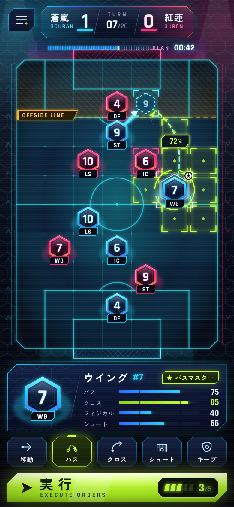
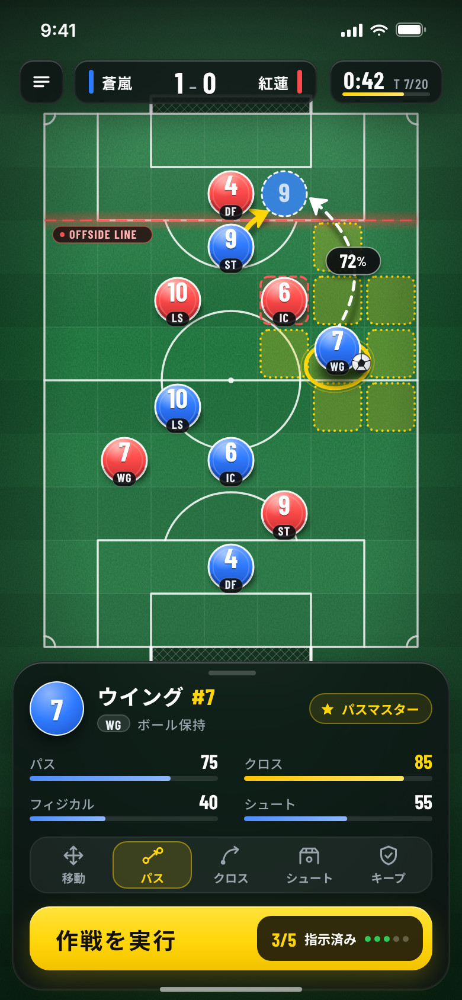
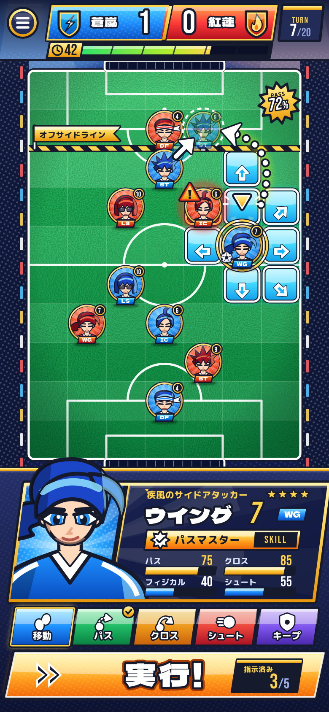
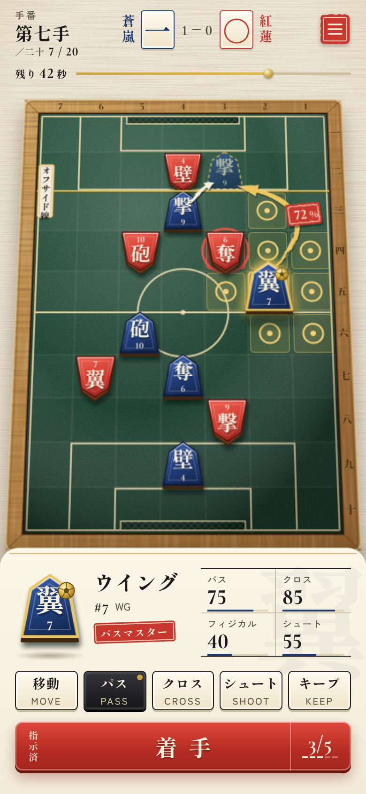
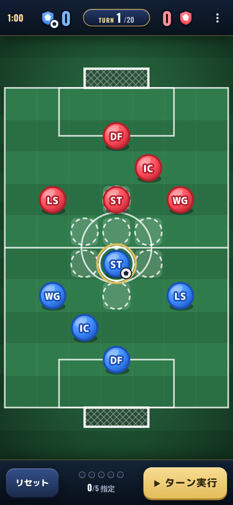
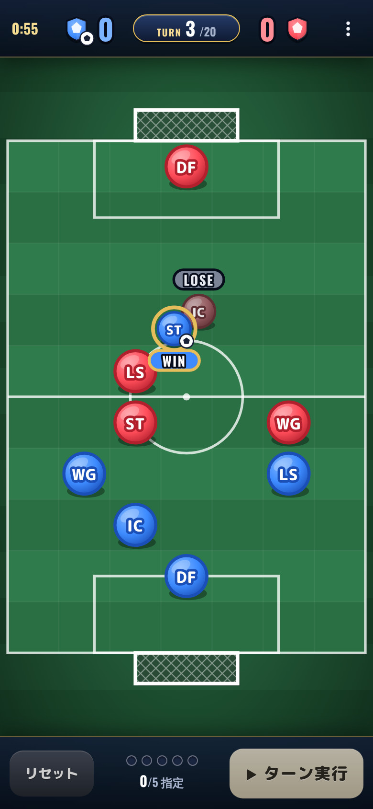
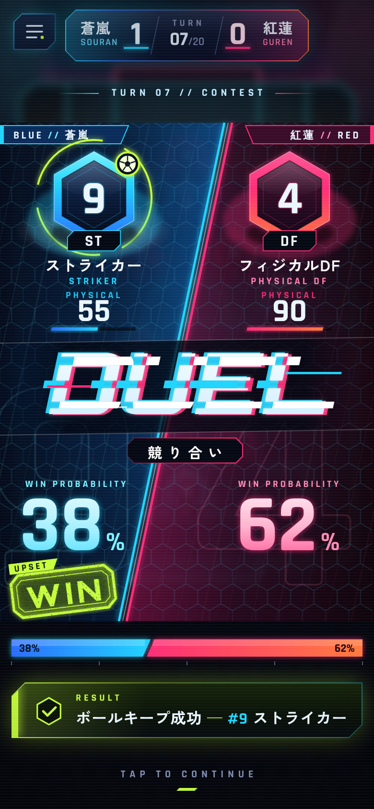
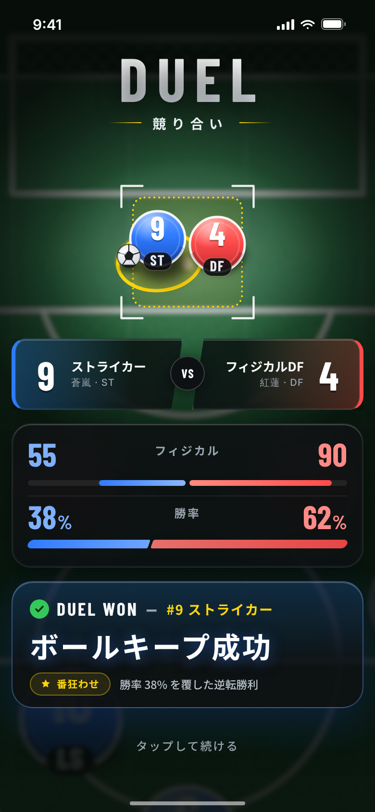
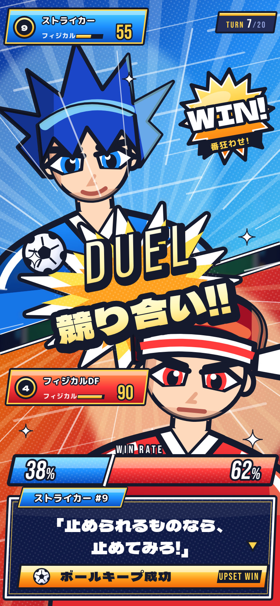
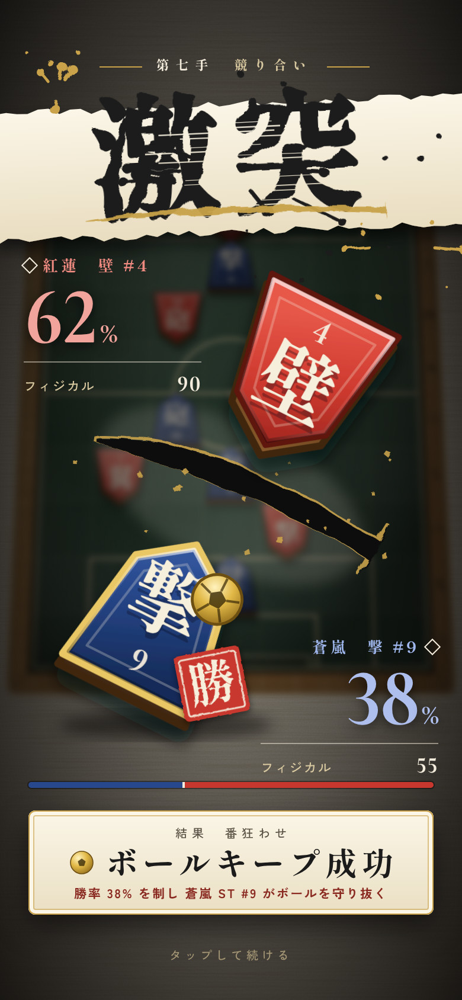

いまの画面は遊べますが、見た目は試作品のままです。商用のスマホゲームとして通用する見た目の方向を4つ、実寸の画面モックアップつきでまとめました。




原因は絵の上手さではありません。見た目の決めごとが足りず、世界観が決まっていないことです。

1 2 3 4 6
5 6商用ゲームの画面は、特別な技術で作られているわけではありません。「舞台はどこか」「選手は何でできているか」「押せる場所は何色か」といった決めごとを先に置き、画面の隅までそれを守っています。次のページで決めごとを7つに整理し、そのあと4つの案を順に見ていきます。
4つの案は、同じ7項目に別の答えを出したものです。どの案を選んでも、この7つを最後まで守れば自作っぽさは消えます。
| 決めごと | いまの状態 | 決めること |
|---|---|---|
| 1 世界観 | なし。一般的なスポーツ配色 | 一言で言える舞台を1つ決める。例は「夜のネオン競技場」「将棋盤の上のサッカー」。 |
| 2 選手の形 | 色の丸と英字2文字 | 役割が形や絵で分かるようにする。チームの違いは色と形の両方で示す。 |
| 3 素材感 | 平らなグラデーション | 素材を1〜2種類に絞る。光の向きを1つ決め、影とハイライトを全部品でそろえる。 |
| 4 文字 | 丸ゴシックと数字用の2書体 | 見出し、数字、本文の3役に書体を割り当てる。大きさは4段階に固定する。 |
| 5 色 | 青、赤、緑、金 | 背景、チーム2色、強調、警告の5色に限る。強調色は「押せる場所」にだけ使う。 |
| 6 見せ場 | 小さな札とバナー | 競り合い、ゴール、オフサイド、試合終了に全画面の演出を用意する。動きの速さと緩急をそろえる。 |
| 7 盤面の外 | 空き | 選手カード、チーム名、エンブレムを常に見せる。タイトル画面とアプリアイコンまで同じ世界観で作る。 |
同じ盤面、同じ情報でも、決めごとが変わると別のゲームに見えます。




チーム名の「蒼嵐」「紅蓮」、選手の二つ名やセリフは、モックアップ用の仮の設定です。画面はスマホの実寸（幅390ポイント）で作っており、いまの盤面（横7マス、縦10マス）と操作をそのまま載せています。
夜の競技場を見下ろすeスポーツ中継の画面です。暗い紺の上で、チームの光だけが動きます。
#050913#21D4FD#FF2D78#C6FF3D#FFB020| 画面の実装 | 発光、ぼかし、斜めの切り欠きをCSSとSVGで実装 |
| 演出 | グリッチ、走査線、光の軌跡 |
| 音 | 電子音系の効果音 |
| イラスト | 不要 |
分析担当が使う戦術ボードです。本物らしい芝の上に、黒いガラスの操作パネルを重ねます。
#1F7A3F#0B0D0F#2F7BFF#FF4B4B#FFD60A| 画面の実装 | いまの構成に近く、色と部品の置き換えが中心 |
| 演出 | 拡大、スタッツの数え上げ、パネルの出入り |
| 音 | ホイッスル、歓声、キック音 |
| イラスト | 不要 |
少年マンガのサッカーです。選手は顔と名前と決めゼリフのあるキャラクターです。
#151A2D#1C46C8#B81224#FFD34D#9CEAFF| イラスト | キャラクター10人分のデザイン、顔アイコン、立ち絵（通常、勝ち、負け） |
| 画面の実装 | 太線の部品一式、斜めの帯、集中線 |
| 文章と音 | 二つ名、セリフ、掛け声。できればボイス |
将棋盤の上でサッカーをする画面です。選手は駒、ピッチは盤、指示は「着手」と呼びます。
#F3ECDC#3A2108#27488C#C8372D#C9A24A| 画面の実装 | 駒、木枠、和紙の質感をCSSとSVGで実装 |
| 演出 | 筆の払い、金の飛沫、判を押す動き |
| 音 | 駒音、太鼓、拍子木 |
| イラスト | 不要。筆文字の見出しは書体で作れる |
どの案も「自作っぽさ」は消せます。違いは、何を強みにして、何を引き受けるかです。
| 比べる点 | A ネオン | B 戦術ボード | C アニメ | D 駒 |
|---|---|---|---|---|
| コンセプトの伝わりやすさ「サッカー×将棋」が見た目で分かるか | △ | ○ | △ | ◎ |
| 盤面の読みやすさ誰がどこにいて、何ができるか | ○ | ◎ | △ | ○ |
| 独自性ほかのゲームと見分けがつくか | △ | △ | ○ | ◎ |
| 第一印象の強さ1枚の画像で目を引けるか | ○ | △ | ◎ | ○ |
| キャラクターの見せやすさ選手の個性とスキルを伝えられるか | △ | △ | ◎ | ○ |
| イラストなしで作れるかコードだけで完成度が出るか | ◎ | ◎ | △ | ◎ |
| 実装の軽さいまの画面から作り替える量 | ○ | ◎ | △ | ○ |
| 端末への負荷の軽さ古いスマホでもなめらかに動くか | △ | ○ | ○ | ◎ |
| 海外への出しやすさ言葉を変えるだけで通じるか | ◎ | ◎ | ○ | △ |
◎ とても良い ○ 良い △ 工夫が要る。評価はモックアップを作って比べた時点の見立てです。
| 案 | モックアップのコード量 | Bを1とした比 | コード以外に必要なもの |
|---|---|---|---|
| A ネオンスタジアム | 121 KB | 約2.0倍 | 効果音 |
| B プロ戦術ボード | 60 KB | 基準 | 効果音 |
| C アニメキャラクターバトル | 188 KB | 約3.2倍 | キャラクターの絵、セリフ、効果音 |
| D 駒（和モダン） | 105 KB | 約1.8倍 | 効果音 |
コード量は、作戦画面と見せ場の2画面を作ったHTMLの合計です。実際の作業量そのものではなく、案どうしの重さを比べるための目安です。
BRAIBOの核は「サッカーを将棋のように読み合う」ことです。Dは、その核を見た目だけで伝えられる唯一の案です。
絵を用意しなくても品質が出るので、いまの体制のまま進められます。
| 位置づけ | 案 | 使い方 |
|---|---|---|
| 本命 | D 駒（和モダン） | 全体の世界観として採用します。 |
| 保険 | B プロ戦術ボード | Dの駒の字が分かりにくいと感じたら、Bに切り替えます。作る量がいちばん少なく、失敗しにくい案です。 |
| 後から足す | C の立ち絵 | 絵が用意できた段階で、Dの見せ場に選手の立ち絵を足します。盤面は駒のまま保ちます。 |
| 方針が変われば | A ネオンスタジアム | オンライン対戦や大会を軸にする場合に選びます。 |
ルールとAIには触れません。見た目の層だけを、盤面から順に作り替えます。
| 問い | 確かめ方 | 合格の目安 |
|---|---|---|
| 3秒で何のゲームか言えるか | 初めて見る人に画面を3秒だけ見せて、どんなゲームかを聞く | 5人中4人が言える |
| 攻める向きを即答できるか | 盤面だけを見せて、青がどちらに攻めるかを聞く | 全員が即答できる |
| 役割を見分けられるか | 選手を指して、役割を当ててもらう。説明を1回した後に行う | 5人中4人が当てる |
| 小さい端末で読めるか | 幅375ポイントの画面で、番号、勝率、残り時間を読む | 腕を伸ばして読める |